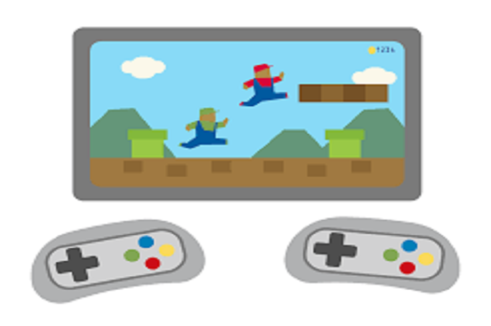
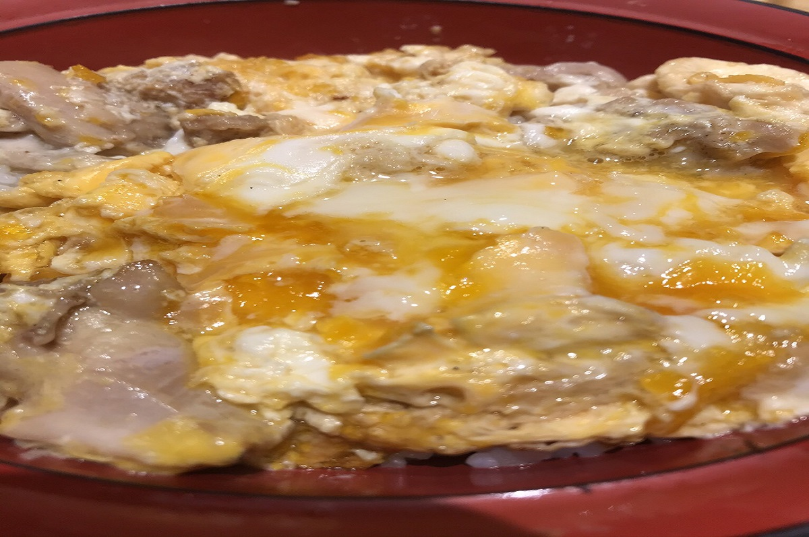
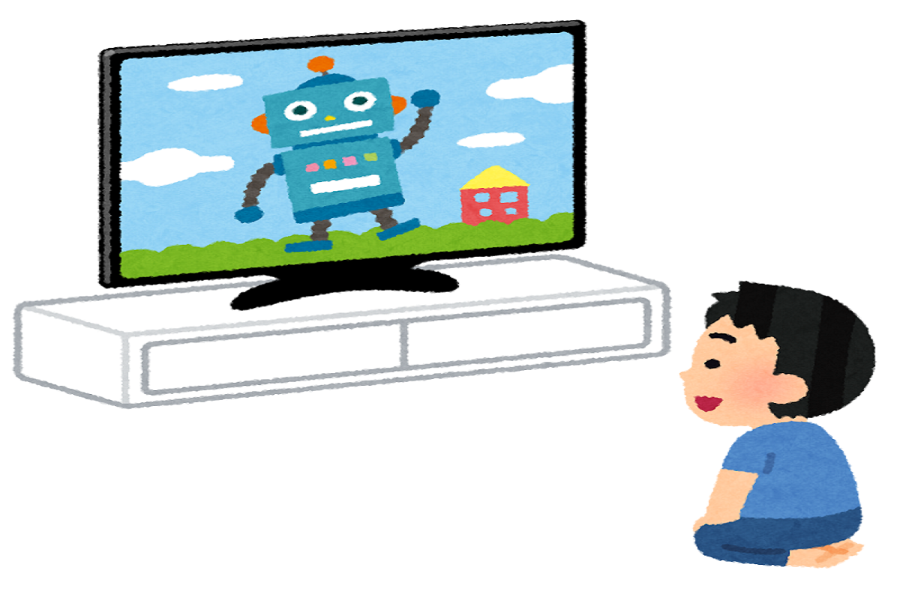
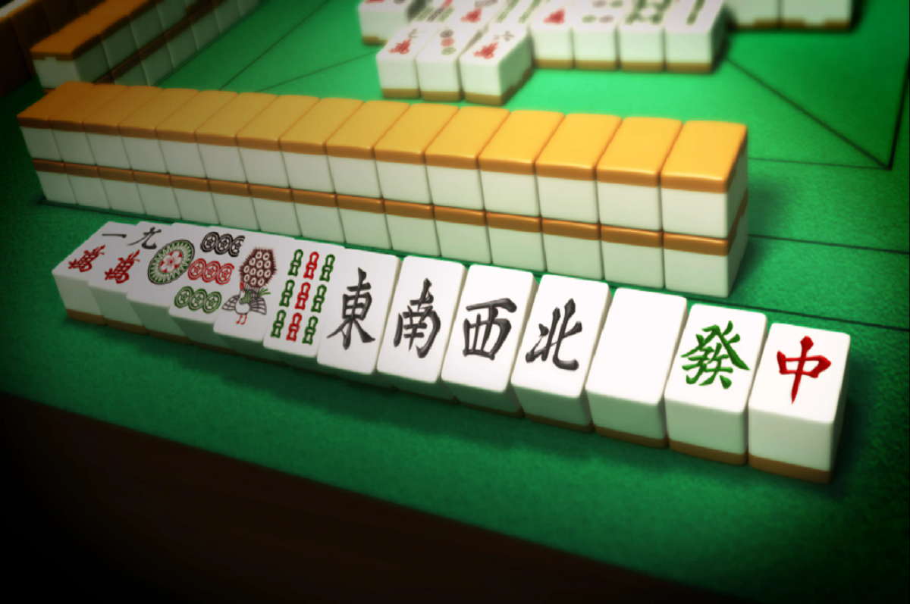

趣味のページ
ここでは私が好きなことを紹介しています。
もし同じ趣味の人ややってみたい趣味があったら
ご気軽に相談してください。

ゲーム
主にモンストやモンハン、FGOをやっています。他にもPS4のゲームでDBDもやったりします。みんなでワイワイやるゲームが大好きです。
釣り
よく家族で釣りにいきます。私はトラウト釣りが大好きです。渓流でやるトラウト釣りは互換を使って自然を感じ、楽しむことが出来ます。

料理
親が自営業を手伝っているのでよく料理も作ったりします。私が考えた料理なども出されることがあるので時間があれば新しい料理を考えたりします。

アニメ鑑賞
私はアニメが大好きでアニメをよく見ています。同じアニメが好きな人と話すのは楽しいですしアニメによって元気をもらえたりします。
スポーツ
決して得意というわけではありませんが体を動かす事は大好きです。特にバスケットボールとバレーボールが好きです。中学、高校ではバスケットボール部でした。

麻雀
家族とよく麻雀を売ったりします。実は家に全自動麻雀卓があります。現実で友達と打ったことがないので麻雀できる人や興味がある人募集中です。